原文连接:https://www.cnblogs.com/badaoliumangqizhi/p/12016153.html
场景
在学习JPA之前先来了解下JDBC与各大数据库的关系。
很久之前出现了很多数据库比如Mysql、Oracle、SqlServer、DB2等。这就导致了应用程序要连哪个数据库就要使用哪个数据库的API。
所以JDBC出现了，定义了一组规范，由应用程序调用JDBC,进而调用所需数据库。
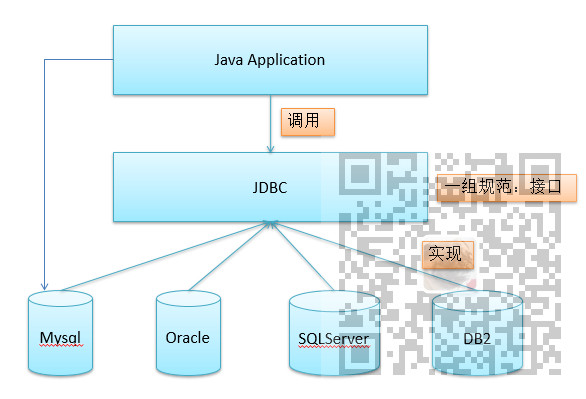
注：
博客主页：
https://blog.csdn.net/badao_liumang_qizhi
关注公众号
霸道的程序猿
获取编程相关电子书、教程推送与免费下载。
实现
什么是JPA
Java Persistence API:用于对象持久化的API
Java EE5.0平台标准的ORM规范，使得应用程序以统一的方式访问持久层。
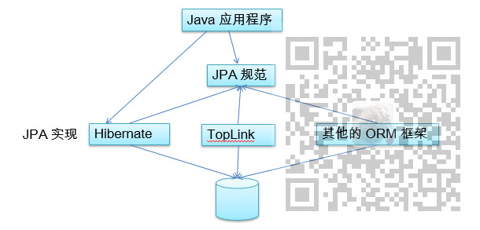
JPA与Hibernate的关系
1.JPA是hibernate的一个抽象，类比于JDBC与JDBC驱动的关系。
2.JPA是规范，JPA本质上就是一种ORM规范，而不是一种ORM框架。因为JPA并未提供ORM实现，它只是制订了一些规范，提供了一些编程的 API 接口，但具体实现则由 ORM 厂商提供实现。
3.Hibernate 是实现：Hibernate 除了作为 ORM 框架之外，它也是一种 JPA 实现
JPA的优势
标准化: 提供相同的 API，这保证了基于JPA 开发的企业应用能够经过少量的修改就能够在不同的 JPA
框架下运行。
简单易用，集成方便: JPA 的主要目标之一就是提供更加简单的编程模型，在 JPA
框架下创建实体和创建 Java 类一样简单，只需要使用 javax.persistence.Entity 进行注释；JPA 的框架和接口也都非常简单，
可媲美JDBC的查询能力:
JPA的查询语言是面向对象的，JPA定义了独特的JPQL，而且能够支持批量更新和修改、JOIN、GROUP BY、HAVING 等通常只有 SQL
才能够提供的高级查询特性，甚至还能够支持子查询。
支持面向对象的高级特性: JPA
中能够支持面向对象的高级特性，如类之间的继承、多态和类之间的复杂关系，最大限度的使用面向对象的模型
JPA包括3方面的技术
ORM 映射元数据：JPA 支持 XML 和 JDK 5.0
注解两种元数据的形式，元数据描述对象和表之间的映射关系，框架据此将实体对象持久化到数据库表中。
JPA 的
API：用来操作实体对象，执行CRUD操作，框架在后台完成所有的事情，开发者从繁琐的 JDBC和 SQL代码中解脱出来。
查询语言（JPQL）：这是持久化操作中很重要的一个方面，通过面向对象而非面向数据库的查询语言查询数据，避免程序和具体的
SQL 紧密耦合。
搭建HelloWorld
打开Eclipse-File-New JPA Project
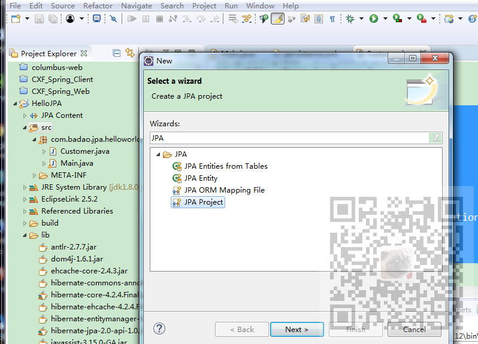
点击Next
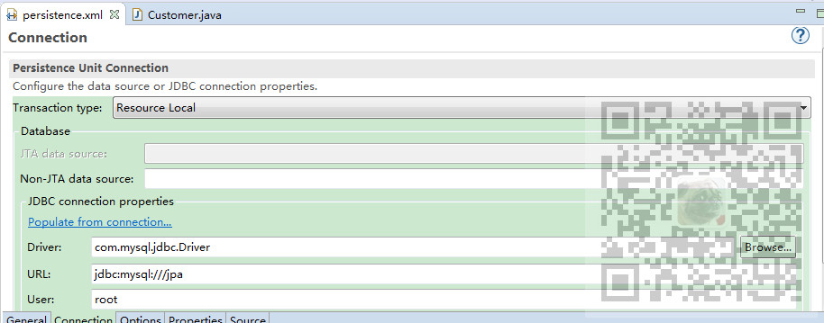
这里要选择Target runtime 为自己的jdk，以及JPA Version ，这里是2.0，然后点击next后再点击next
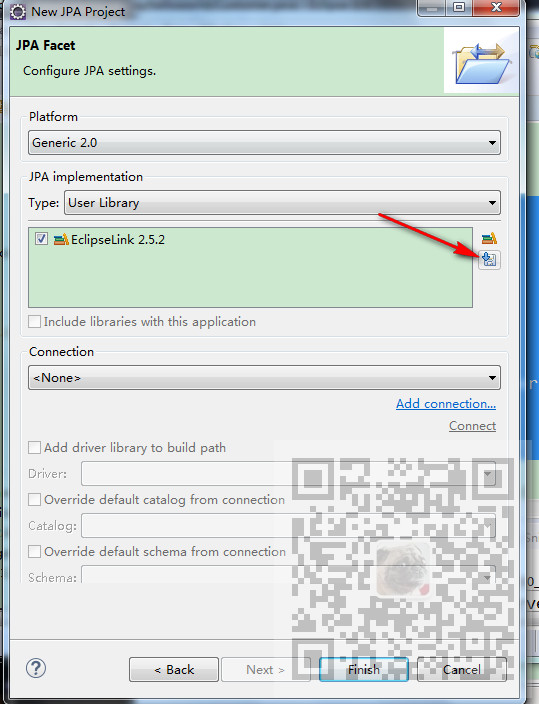
第一次来到此页面不会有EclipseLink，点击右边的下载按钮
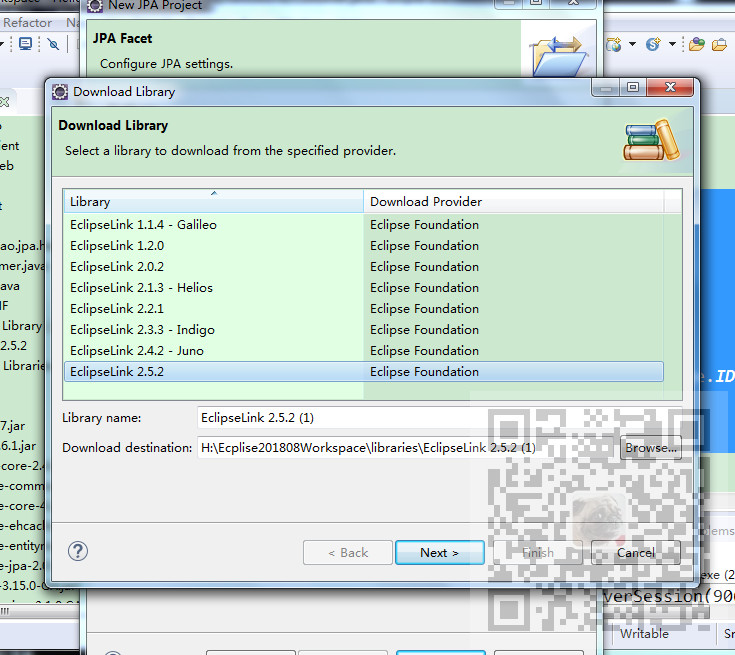
选择指定版本点击next进行下载，这里选择的是EclipseLink2.5.2
下载完成点击Finish后项目结构如下
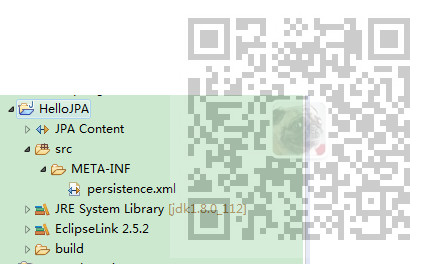
会自动生成一个persistence.xml
加入依赖
在项目下新建lib目录，然后加入相关jar包
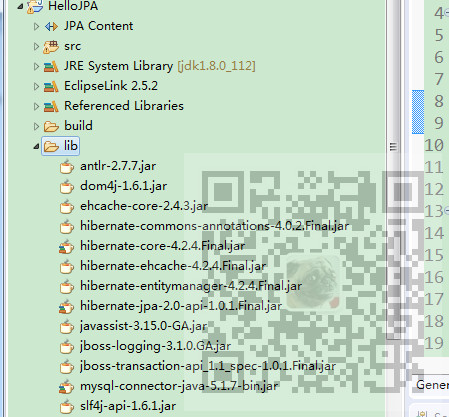
修改配置文件
双击打开上面的persistnece.xml,选择Connection视图，然后选择Transaction Type 为Resource Local
然后依次配置好数据库的驱动等，其中URL中jpa对应的就是数据库名。
然后保存，使用Source视图查看，此时在properties下就会有如下代码
<properties>
<property name="hibernate.dialect" value="org.hibernate.dialect.MySQL5Dialect" />
<property name="javax.persistence.jdbc.driver" value="com.mysql.jdbc.Driver"/>
<property name="javax.persistence.jdbc.url" value="jdbc:mysql:///jpa"/>
<property name="javax.persistence.jdbc.user" value="root"/>
<property name="javax.persistence.jdbc.password" value="123"/>
</properties>
然后再在配置文件中加入Hibernate相关的配置信息。
<property name="hibernate.format_sql" value="true"/>
<property name="hibernate.show_sql" value="true"/>
<property name="hibernate.hbm2ddl.auto" value= "update"/>
新增实体类
在src下新建包com.badao.jpa.helloworld
包下新建实体类Customer,通过添加注解的方式完成实体类到数据库的映射。
1.在类名上添加@Entity表明是实体类。
2.在类名上添加@Table注解，并使用name属性与数据库中的表名相对应。
3.在主键ID的get方法上使用@Id声明是主键，并使用@GeneratedValue注解声明主键策略。
4.在某些实体类属性名与数据库列名不对应的属性的get方法上要使用@Column注解进行映射。
package com.badao.jpa.helloworld;
import javax.persistence.Column;
import javax.persistence.Entity;
import javax.persistence.GeneratedValue;
import javax.persistence.GenerationType;
import javax.persistence.Id;
import javax.persistence.Table;
@Entity
@Table(name="JPA_CUSTOMERS")
public class Customer {
private Integer id;
private String lastName;
private String email;
private int age;
@GeneratedValue(strategy = GenerationType.IDENTITY)
@Id
public Integer getId() {
return id;
}
public void setId(Integer id) {
this.id = id;
}
@Column(name="LAST_NAME")
public String getLastName() {
return lastName;
}
public void setLastName(String lastName) {
this.lastName = lastName;
}
public String getEmail() {
return email;
}
public void setEmail(String email) {
this.email = email;
}
public int getAge() {
return age;
}
public void setAge(int age) {
this.age = age;
}
}
添加完实体类后还要回到配置文件中添加一行配置
<class>com.badao.jpa.helloworld.Customer</class>
完整配置文件代码
<?xml version="1.0" encoding="UTF-8"?>
<persistence version="2.0" xmlns="http://java.sun.com/xml/ns/persistence" xmlns:xsi="http://www.w3.org/2001/XMLSchema-instance" xsi:schemaLocation="http://java.sun.com/xml/ns/persistence http://java.sun.com/xml/ns/persistence/persistence_2_0.xsd">
<persistence-unit name="HelloJPA" transaction-type="RESOURCE_LOCAL">
<!-- 添加持久化类 -->
<class>com.badao.jpa.helloworld.Customer</class>
<properties>
<property name="hibernate.dialect" value="org.hibernate.dialect.MySQL5Dialect" />
<property name="javax.persistence.jdbc.driver" value="com.mysql.jdbc.Driver"/>
<property name="javax.persistence.jdbc.url" value="jdbc:mysql:///jpa"/>
<property name="javax.persistence.jdbc.user" value="root"/>
<property name="javax.persistence.jdbc.password" value="523627"/>
<!-- 配置 JPA 实现产品的基本属性. 配置 hibernate 的基本属性 -->
<property name="hibernate.format_sql" value="true"/>
<property name="hibernate.show_sql" value="true"/>
<property name="hibernate.hbm2ddl.auto" value="update"/>
</properties>
</persistence-unit>
</persistence>
新建表
打开数据库jpa并新建表jpa_customers,设计字段如下
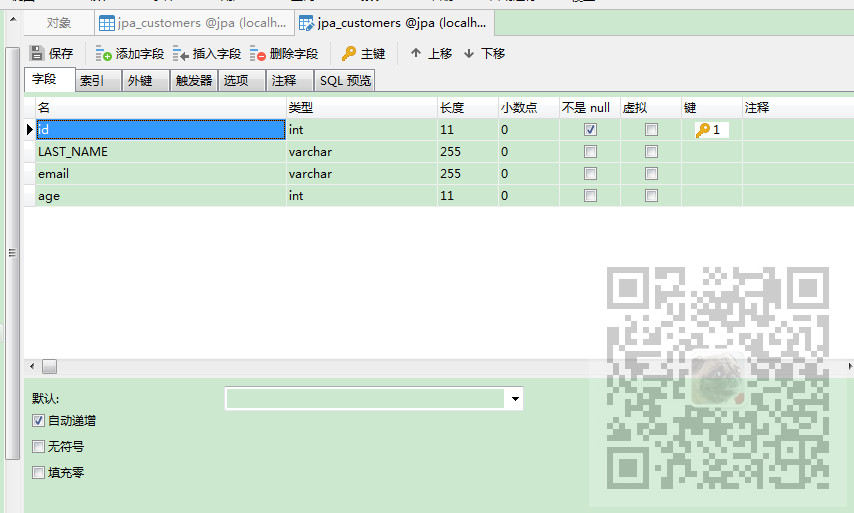
新建启动类
在包下新建Main类，然后编写main方法
package com.badao.jpa.helloworld;
import java.util.Date;
import javax.persistence.EntityManager;
import javax.persistence.EntityManagerFactory;
import javax.persistence.EntityTransaction;
import javax.persistence.Persistence;
public class Main {
public static void main(String[] args) {
//1. 创建 EntitymanagerFactory 要与配置文件中一致
String persistenceUnitName = "HelloJPA";
EntityManagerFactory entityManagerFactory =
Persistence.createEntityManagerFactory(persistenceUnitName);
//2. 创建 EntityManager. 类似于 Hibernate 的 SessionFactory
EntityManager entityManager = entityManagerFactory.createEntityManager();
//3. 开启事务
EntityTransaction transaction = entityManager.getTransaction();
transaction.begin();
//4. 进行持久化操作
Customer customer = new Customer();
customer.setAge(12);
customer.setEmail("badao@liumang.com");
customer.setLastName("Badao");
entityManager.persist(customer);
//5. 提交事务
transaction.commit();
//6. 关闭 EntityManager
entityManager.close();
//7. 关闭 EntityManagerFactory
entityManagerFactory.close();
}
}
然后运行main方法
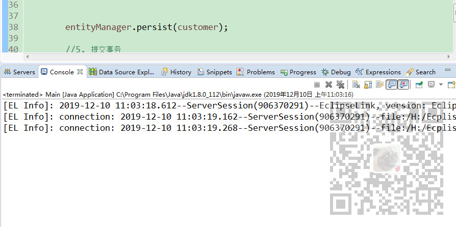
然后刷新数据库中的数据
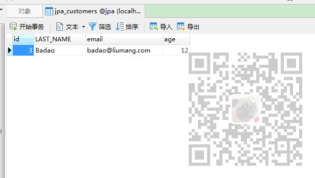
示例代码下载
关注公众号：
霸道的程序猿
回复：
HelloJPA